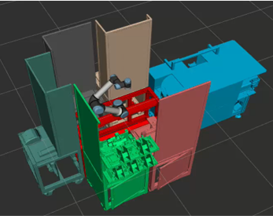

Dimofac — module reconfiguration demo
UR5e operating across reconfigured production sub-modules.
Digital twin of six production sub-modules with a UR5e manipulator in ROS 2, with hardware-in-the-loop validation across mechanical, gripper, and safety-sensor states. Reconfigures itself at runtime as modules are physically repositioned.
UR5e operating across reconfigured production sub-modules.

